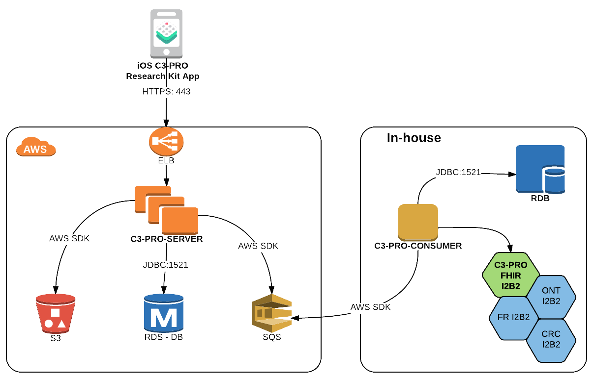

The C3-PRO iOS framework, written in Swift, adds ResearchKit functionality to your research app, and then some. Built modularly, you need only use components that are useful to you; for example the Questionnaire handlers, allowing you to hand 🔥 Questionnaire resources to ResearchKit for rendering; no need to hand-code surveys!
An app outfitted with C3-PRO captures consent of participants willing to enroll in a study and handles surveys, interactive tasks and sensory data collection. Data is captured as FHIR resources and encrypted on-device using AES and public-key RSA algorithms. The private key is only known to the researcher's (in-house) server, making decryption impossible on all public-facing parts. The FHIR resources currently in use are:
Serves as point-of-contact with the app and is the only public-facing part of the toolchain. The current release runs in a highly reliable AWS environment to ensure high availability and scalability. It's in charge of
Daemon that runs in-house with highly limited access. Consumes from the “receiver”'s SQS queue, decrypts the FHIR resources and sends them into i2b2 using the newly created C3-PRO FHIR i2b2 cell. To ensure that all data is recorded properly, encrypted raw data is also stored in-house as BLOB.
An i2b2 FHIR DSTU-2 compliant cell. In this first release the cell accepts PUT and POST REST calls for the resources mentioned above, converting them to i2b2 facts.